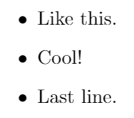
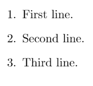
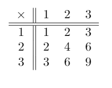
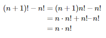

You can enter math mode in two ways:
You can use \text{…} to type normal text in math mode. For example, $$\textrm{\$\$\sum_{i=1}^n I = \frac{n(n+1)}{2} \text{ for all } n \in \mathbb{N}\$\$}$$ will display $$\sum_{i=1}^n I = \frac{n(n+1)}{2} \text{ for all } n \in \mathbb{N}$$
Note:There are spaces before and after “for all” since math mode will ignore spacing. However, a space can be force by having a backslash before a space. For example, $a b$ will display \(ab\) while $a\ b$ will display \(a\ b\).
| Code | Result |
| \textbf{sample} | $$\textbf{sample}$$ |
| \textit{sample} | $$\textit{sample}$$ |
| \texttt{sample} | $$\texttt{sample}$$ |
| \textsf{sample} | $$\textsf{sample}$$ |
| \underline{sample} | $$\underline{sample}$$ |
| \tilde{sample} | $$\tilde{sample}$$ |
| Code | Result |
| \mathrm{AaBbCc} | $$\mathrm{AaBbCc}$$ |
| \mathbf{AaBbCc} | $$\mathbf{AaBbCc}$$ |
| \mathsf{AaBbCc} | $$\mathsf{AaBbCc}$$ |
| \mathbb{AaBbCc} | $$\mathbb{AaBbCc}$$ |
| \mathfrak{AaBbCc} | $$\mathfrak{AaBbCc}$$ |
| \mathcal{AaBbCc} | $$\mathcal{AaBbCc}$$ |
| Code | Result |
| $$\begin{itemize} \item Like this. \item Cool! \item Last line. \end{itemize}$$ |  |
| Code | Result |
| \begin{enumerate} \item First line. \item Second line. \item Third line. \end{enumerate} |  |
Tables can be created using the tabular environment. Column alignment and separation can be specified as an argument to command \begin{tabular}: write l, c or r to specify that a column should be aligned left, center or left. To separate columns by a single or double line, enter a single or double bar (| or ||).
Columns are then separated by ampersands (&) and a new row can be entered by a double-backslash (\\). To insert a horizontal line between two rows, simply enter \hline.
| Code | Result |
| \begin{tabular}{c||ccc} $\times$ & 1 & 2 & 3 \\ \hline \hline 1 & 1 & 2 & 3 \\ 2 & 2 & 4 & 6 \\ 3 & 3 & 6 & 9 \\ \end{tabular} |  |
In case a proof needs a sequence of intermediate equations, the environment align* can be used which behaves like the tabular environment.
New lines are introduced by inserting a double-backslash (\\), and the two columns are separated by an ampersand (&). The left column is aligned right and the right column is aligned left.
| Code | Result |
| $$\text{\begin{align*}(n+1)!-n! & = (n+1)n!-n! \\& = n \cdot n! + n! – n! \\& = n \cdot n!\end{align*}}$$ |  |
Note: align* environment automatically enters math mode, therefore \text{…} is needed for normal text enter.
More ampersands will create more columns. For example, to add annotations to each line, you can use a double-ampersand (&&).